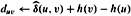

|
|
< Day Day Up > |
|
Johnson's algorithm finds shortest paths between all pairs in O(V2 lg V + V E) time. For sparse graphs, it is asymptotically better than either repeated squaring of matrices or the Floyd-Warshall algorithm. The algorithm either returns a matrix of shortest-path weights for all pairs of vertices or reports that the input graph contains a negative-weight cycle. Johnson's algorithm uses as subroutines both Dijkstra's algorithm and the Bellman-Ford algorithm, which are described in Chapter 24.
Johnson's algorithm uses the technique of reweighting, which works as follows. If all edge weights w in a graph G = (V, E) are nonnegative, we can find shortest paths between all pairs of vertices by running Dijkstra's algorithm once from each vertex; with the Fibonacci-heap min-priority queue, the running time of this all-pairs algorithm is O(V2 lg V + V E). If G has negative-weight edges but no negative-weight cycles, we simply compute a new set of nonnegative edge weights that allows us to use the same method. The new set of edge weights  must satisfy two important properties.
must satisfy two important properties.
For all pairs of vertices u, v ∈ V, a path p is a shortest path from u to v using weight function w if and only if p is also a shortest path from u to v using weight function .
For all edges (u, v), the new weight is nonnegative.
As we shall see in a moment, the preprocessing of G to determine the new weight function  can be performed in O(V E) time.
can be performed in O(V E) time.
As the following lemma shows, it is easy to come up with a reweighting of the edges that satisfies the first property above. We use δ to denote shortest-path weights derived from weight function w and to denote shortest-path weights derived from weight function  .
.
Given a weighted, directed graph G = (V, E) with weight function w : E → R, let h : V → R be any function mapping vertices to real numbers. For each edge (u, v) ∈ E, define
Let p = 〈v0, v1,..., vk〈 be any path from vertex v0 to vertex vk. Then p is a shortest path from v0 to vk with weight function w if and only if it is a shortest path with weight function . That is, w(p) = δ(v0, vk) if and only if . Also, G has a negative-weight cycle using weight function w if and only if G has a negative-weight cycle using weight function .
Proof We start by showing that
We have
Therefore, any path p from v0 to vk has . If one path from v0 to vk is shorter than another using weight function w, then it is also shorter using . Thus, w(p) = δ(v0, vk) if and only if .
Finally, we show that G has a negative-weight cycle using weight function w if and only if G has a negative-weight cycle using weight function . Consider any cycle c = 〈v0, v1,..., vk〉, where v0 = vk. By equation (25.10),
|
|
= |
w(c) + h(v0) - h(vk) |
|
= |
w(c), |
and thus c has negative weight using w if and only if it has negative weight using  .
.
Our next goal is to ensure that the second property holds: we want  to be nonnegative for all edges (u, v) ∈ E. Given a weighted, directed graph G = (V, E) with weight function w : E → R, we make a new graph G′ = (V′, E′), where V′ = V ∪ {s} for some new vertex s ∉ V and E′ = E ∪ {(s, v) : v ∈ V}. We extend the weight function w so that w(s, v) = 0 for all v ∈ V . Note that because s has no edges that enter it, no shortest paths in G′, other than those with source s, contain s. Moreover, G′ has no negative-weight cycles if and only if G has no negative-weight cycles. Figure 25.6(a) shows the graph G′ corresponding to the graph G of Figure 25.1.
to be nonnegative for all edges (u, v) ∈ E. Given a weighted, directed graph G = (V, E) with weight function w : E → R, we make a new graph G′ = (V′, E′), where V′ = V ∪ {s} for some new vertex s ∉ V and E′ = E ∪ {(s, v) : v ∈ V}. We extend the weight function w so that w(s, v) = 0 for all v ∈ V . Note that because s has no edges that enter it, no shortest paths in G′, other than those with source s, contain s. Moreover, G′ has no negative-weight cycles if and only if G has no negative-weight cycles. Figure 25.6(a) shows the graph G′ corresponding to the graph G of Figure 25.1.
Now suppose that G and G′ have no negative-weight cycles. Let us define h(v) = δ(s, v) for all v ∈ V′. By the triangle inequality (Lemma 24.10), we have h(v) ≤ h(u) + w(u, v) for all edges (u, v) ∈ E′. Thus, if we define the new weights according to equation (25.9), we have , and the second property is satisfied. Figure 25.6(b) shows the graph G′ from Figure 25.6(a) with reweighted edges.
Johnson's algorithm to compute all-pairs shortest paths uses the Bellman-Ford algorithm (Section 24.1) and Dijkstra's algorithm (Section 24.3) as subroutines. It assumes that the edges are stored in adjacency lists. The algorithm returns the usual |V| × |V| matrix D = dij, where dij = δ(i, j), or it reports that the input graph contains a negative-weight cycle. As is typical for an all-pairs shortest-paths algorithm, we assume that the vertices are numbered from 1 to |V|.
JOHNSON(G) 1 compute G′, where V[G′] = V[G] ∪ {s}, E[G′] = E[G] ∪ {(s, v) : v ∈ V[G]}, and w(s, v) = 0 for all v ∈ V[G] 2 if BELLMAN-FORD(G′, w, s) = FALSE 3 then print "the input graph contains a negative-weight cycle" 4 else for each vertex v ∈ V[G′] 5 do set h(v) to the value of δ(s, v) computed by the Bellman-Ford algorithm 6 for each edge (u, v) ∈ E[G′] 7 do 8 for each vertex u ∈ V[G] 9 do run DIJKSTRA(G, , u) to computefor all v ∈ V[G] 10 for each vertex v ∈ V[G] 11 do  12 return D
This code simply performs the actions we specified earlier. Line 1 produces G′. Line 2 runs the Bellman-Ford algorithm on G′ with weight function w and source vertex s. If G′, and hence G, contains a negative-weight cycle, line 3 reports the problem. Lines 4-11 assume that G′ contains no negative-weight cycles. Lines 4-5 set h(v) to the shortest-path weight δ(s, v) computed by the Bellman-Ford algorithm for all v ∈ V′. Lines 6-7 compute the new weights . For each pair of vertices u, v ∈ V , the for loop of lines 8-11 computes the shortest-path weight by calling Dijkstra's algorithm once from each vertex in V. Line 11 stores in matrix entry duv the correct shortest-path weight δ(u, v), calculated using equation (25.10). Finally, line 12 returns the completed D matrix. Figure 25.6 shows the execution of Johnson's algorithm.
If the min-priority queue in Dijkstra's algorithm is implemented by a Fibonacci heap, the running time of Johnson's algorithm is O(V2 lg V + V E). The simpler binary min-heap implementation yields a running time of O(V E lg V), which is still asymptotically faster than the Floyd-Warshall algorithm if the graph is sparse.
Use Johnson's algorithm to find the shortest paths between all pairs of vertices in the graph of Figure 25.2. Show the values of h and  computed by the algorithm.
computed by the algorithm.
Suppose that w(u, v) ≥ 0 for all edges (u, v) ∈ E. What is the relationship between the weight functions w and  ?
?
Professor Greenstreet claims that there is a simpler way to reweight edges than the method used in Johnson's algorithm. Letting w* = min(u, v)∈E {w(u, v)}, just define for all edges (u, v) ∈ E. What is wrong with the professor's method of reweighting?
Suppose that we run Johnson's algorithm on a directed graph G with weight function w. Show that if G contains a 0-weight cycle c, then for every edge (u, v) in c.
Professor Michener claims that there is no need to create a new source vertex in line 1 of JOHNSON. He claims that instead we can just use G′ = G and let s be any vertex in V[G]. Give an example of a weighted, directed graph G for which incorporating the professor's idea into JOHNSON causes incorrect answers. Then show that if G is strongly connected (every vertex is reachable from every other vertex), the results returned by JOHNSON with the professor's modification are correct.
Suppose that we wish to maintain the transitive closure of a directed graph G = (V, E) as we insert edges into E. That is, after each edge has been inserted, we want to update the transitive closure of the edges inserted so far. Assume that the graph G has no edges initially and that the transitive closure is to be represented as a boolean matrix.
Show how the transitive closure G* = (V, E*) of a graph G = (V, E) can be updated in O(V2) time when a new edge is added to G.
Give an example of a graph G and an edge e such that Ω(V2) time is required to update the transitive closure after the insertion of e into G.
Describe an efficient algorithm for updating the transitive closure as edges are inserted into the graph. For any sequence of n insertions, your algorithm should run in total time , where ti is the time to update the transitive closure when the ith edge is inserted. Prove that your algorithm attains this time bound.
A graph G = (V, E) is ∈-dense if |E| = Θ(V1+∈) for some constant ∈ in the range 0 < ∈ ≤ 1. By using d-ary min-heaps (see Problem 6-2) in shortest-paths algorithms on ∈-dense graphs, we can match the running times of Fibonacci-heap-based algorithms without using as complicated a data structure.
What are the asymptotic running times for INSERT, EXTRACT-MIN, and DECREASE-KEY, as a function of d and the number n of elements in a d-ary min-heap? What are these running times if we choose d = Θ(nα) for some constant 0 < α ≤ 1? Compare these running times to the amortized costs of these operations for a Fibonacci heap.
Show how to compute shortest paths from a single source on an ∈-dense directed graph G = (V, E) with no negative-weight edges in O(E) time. (Hint: Pick d as a function of ∈.)
Show how to solve the all-pairs shortest-paths problem on an ∈-dense directed graph G = (V, E) with no negative-weight edges in O(V E) time.
Show how to solve the all-pairs shortest-paths problem in O(V E) time on an ∈-dense directed graph G = (V, E) that may have negative-weight edges but has no negative-weight cycles.
|
|
< Day Day Up > |
|